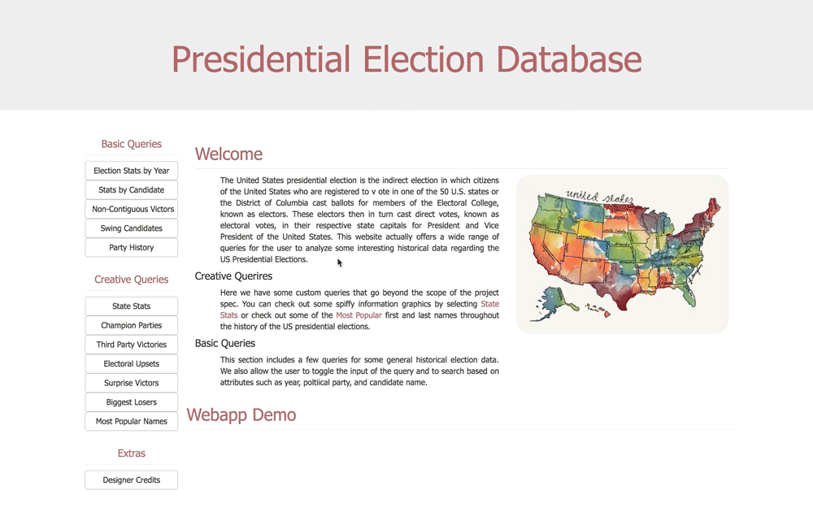

Creative Queries
Basic Queries
Basic Queries
Welcome
The United States presidential election is the indirect election in which citizens of the United States who are registered to v ote in one of the 50 U.S. states or the District of Columbia cast ballots for members of the Electoral College, known as electors. These electors then in turn cast direct votes, known as electoral votes, in their respective state capitals for President and Vice President of the United States. This website actually offers a wide range of queries for the user to analyze some interesting historical data regarding the US Presidential Elections.
Creative Querires
Here we have some custom queries that go beyond the scope of the project spec. You can check out some spiffy information graphics by selecting State Stats or check out some of the Most Popular first and last names throughout the history of the US presidential elections.
Basic Queries
This section includes a few queries for some general historical election data. We also allow the user to toggle the input of the query and to search based on attributes such as year, poltiical party, and candidate name.

Webapp Demo
